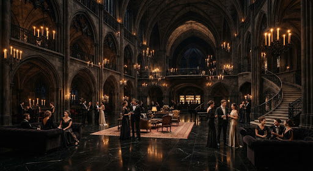
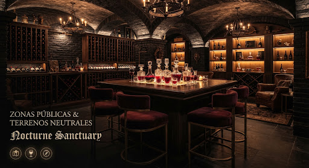
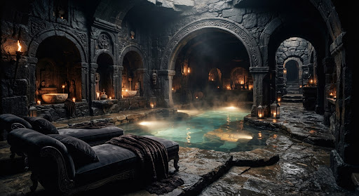
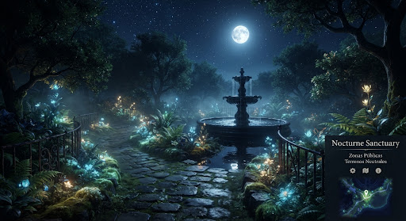

"El único hotel 5 estacas donde monstruos,
fantasmas y criaturas de la noche pueden relajarse en paz,
lejos del estrés y los molestos humanos."
Recintos & Salones del Castillo
Cada salón está diseñado para que vampiros,
hombres lobo y brujas disfruten de fiestas ruidosas sin riesgo de interrupciones humanas.
El Gran Salón de Baile de Drácula (The Grand Ballroom)

El corazón festivo del hotel. Escenario de las mejores celebraciones de Drac,
Mavis y la pandilla de monstruos. Techos góticos giganterecos,
suelo de mármol negro a prueba de pisadas de monstruos gigantes,
y candelabros flotantes que bailan al son de la orquesta zombie.
Buffet & Banquete Cripta-Gourmet

Delicias espeluznantes preparadas al minuto: moscas crujientes en tartaleta,
sopa de globos oculares,
panqueques de gusanos gelatinosos y sangría fresca de Transilvania servida en jarras de cráneo ancestral.
El Spa de Baba & Termas de Fango Tóxico

Delicias espeluznantes preparadas al minuto: moscas crujientes en tartaleta,
sopa de globos oculares,
panqueques de gusanos gelatinosos y sangría fresca de Transilvania servida en jarras de cráneo ancestral.
Jardines de Sombras & Cementerio

Paseos nocturnos entre lápidas milenarias, senderos con niebla perenne
y parque recreativo cerrado para los hiperactivos cachorros lobo de Wayne y Wanda.